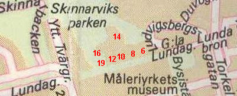

|
Gamla Lundagatan  1993
Panorama av Heinrich Neuhaus, 1870 Ur Kulturhus på Söder och Djurgården, Arne Eriksson, 1999
Reservatet ligger på Skinnarviksberget och utgör stadsbebyggelsens norra gräns mot det obebyggda berget. Nuvarande Gamla Lundagatan omtalas i Holms tomtbok 1679 såsom »Nybegynter gatta till Mårten Sommes gwarn«; denna kvarn har gett upphov till det ännu existerande kvartersnamnet Somens Kvarn. År 1686 kallas den av Holm omtalade gatan för »Soms gwam gata« och 1724 »Somens gwamgatan«, men 1742 »Lilla Skinnarviksgatan«. Det namnet behåller den till namnrevisionen 1885, då man byter ut det mot Lundagatan, som i sin tur i sin östra del år 1961 ersätts av Gamla Lundagatan. I slutet av 1960-talet uppfördes moderna bostadshus söder om reservatet. Den äldre bebyggelsen revs men kvar blev de nu bevarade kulturhistoriskt intressanta husen på den norra sidan av gatan. Området kring Gamla Lundagatan har författaren Irja Browallius skildrat i två romaner - Josef gipsmakare och Ljuva barndomstid. Hon ger där levande verklighetsskildringar från 1800-talets slut och 1900-talets första årtionden.
Browallius beskriver i Ljuva barndomstid ett stycke fattigsöder bortom all ära och redlighet, halvt idyll halvt förfall. Längs den knaggligt stigande gatan, som egentligen bara är en backe med gräs och maskrosor mellan bergknallarna, ligger de små rödmålade husen med sina vildvuxna trädgårdar bakom höga plank. Här bodde enkelt folk från fabrikerna, krokiga gummor och orkeslösa gubbar, de flesta vinddrivna existenser med ett trasigt förflutet men med livslögnen i behåll. Romanens figurer är tecknade efter verkligheten. Där finns »ogifta Bergkvist«, en försupen före detta lärarinna som går och säljer skrumpna äpplen på kaféerna, »lilla Öhman« som övergetts av sin karl och ensam får sörja för sin flicka, »fröken Bock«, som uppvaktas av ett gammalt hjon från arbetsinrättningen och många andra. Trots allt elände finns det också förnöjsamhet. På sommarkvällarna spelas det kort vid planken, och i gränderna kan höras tonerna från ett handklaver. Under den mörka tiden kommer lykttändaren med sitt långa spö på ett bestämt klockslag för att tända gaslyktorna: En gång i veckan hade lykttändaren stege med sig. Han var då iklädd blått förkläde, och han steg ledigt och elegant på stegen, sedan han först hade stöttat den väl mot den lykta, som just då var aktuell och så gned han glasen invärtes och utvärtes och spottade ibland nitiskt på trasan. Så undersökte han med huvudet på sned lampan och fyllde på den och putsade veken. Vid gatan fanns bland annat en lumphandlare med stall och åkarhästar, ett trädgårdsmästeri och en skräddare med träben.
Gamla Lundagatan 16, Kv Haren
Gamla Lundagatan 19, Kv Haren Tomten uppläts 1733, då troligen det lilla reveterade timmerhuset byggdes.
Här slog han sig ihop med en gift kvinna från västkusten och bildade en ny familj i Stockholm. Den gamle reslige gipsmakaren med sitt böljande skägg blev med tiden en känd gestalt på Söder. Pisani dog 1908 - nittio år gammal. Irja Browallius har beskrivit morfaderns hus: Det var ganska högt och avlångt i en våning och låg i ena hörnet av den stora trädgården. Allting var lustigt och oregelbundet här. Det såg ut som om många människor under årens lopp hade rått om huset och var och en av dem hade ändrat det efter sin smak och också planterat i trädgården, vad de ville ha, medan allt det gamla fick vara kvar. Så hade någon byggt till huset på kortsidan, ty där var ett stort rum, som låg mycket lägre än de andra. Irja Browallius mindes särskilt att taket sackade ner i mitten av stora rummet. Det gick bäst att stå rak i hörnen. I trädgården fanns en stor syrenberså, plommonträd och potatisland. Gårdsplanen var omgärdad av träd och buskar och över den sluttande marken slingrade sig gångar och stigar. Morfadern byggde själv tre lusthus på tomten, det ena med hjälp av mågen, premiäraktören vid Operan Carl Browallius, Irjas far. Josef Pisani lyckades så småningom själv köpa in huset de bodde i. Förut hade de varit hyresgäster hos ägaren, en byggmästare. Amorteringarna klarades på 71/2 år och vid 75 års ålder, 1893, blev Josef husägare. Då Stockholms stad 1909 skulle lösa in fastigheten visade det sig att Pisanis och flera tidigare ägare inte hade lagfart på köpet. Detta innebar att staden hade rätt att lösa fastigheten för den köpesumma som gällde vid den senaste lagfarten (420 kronor år 1841). Istället sänktes det begärda priset från 15.000 till 10.000 kronor och familjen fick bo kvar i änkans livstid för 150 kronor i årshyra. År 1880 hyser huset 5 vuxna och 2 barn. De vuxna har titlar som arbetskarl och skoarbetare. År 1910 bor här 2 vuxna, inga barn. De titlar som anges är änka och ogifta. År 1940 hyr en ensam man huset som sommarbostad för 100 kr. Hans titel är handelsbiträde. År 1970 bor en skulptris i huset. |
{kind=link}